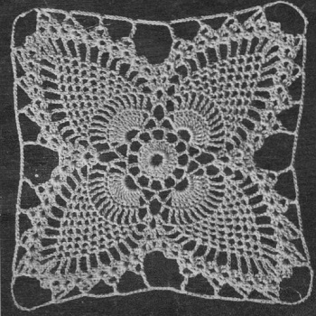

Tablecloth Pattern 7775
MATERIALS:
J.P. COATS BIG BALL BEST Six CORD MERCERIZED CROCHET,
Size 30: 26 balls of White,Ecru or Cream, or
CLARK'S BIG BALL THREE CORD MERCERIZED CROCHET, Size 30: 21 balls of White,Ecru or Cream, or 28 balls of color.
Steel Crochet Hook No. 10.
GAUGE: Each motif measures 4 1/2 inches square.
FIRST MOTIF: Starting at center, ch 10. Join with sl st to form ring.
1st rnd: Ch 3, 23 dc in ring. Sl st in 3rd ch of ch-3.
2nd rnd: Ch 6, * skip 1 dc, dc in next dc, ch 3. Repeat from * around.
Sl st in 3rd ch of ch-6 (12 sps).
3rd rnd: Sl st in next ch, sc in sp, (ch 7, sc in next sp) 11 times; ch 3, tr in 1st sc.
4th rnd: Sc in loop just made, * ch 7, sc in next loop, ch 2, 12 tr in next loop, ch 2, sc in next loop. Repeat from * around. Join.
5th rnd: Sl st in next 2 ch of ch.7 loop, ch 3, in same loop make dc, ch 2 and 2 dc (shell made), * (tr in next tr, ch 1) 11 times; tr in next tr, in next ch.7 loop make 2 dc, ch 2 and 2 dc (another shell made). Repeat
from * around. Join.
6th rnd: Sl st in next dc and in sp, ch 3, in same sp make dc, (ch 2, 2 dc) twice; * ch 4,sc in next ch-1 sp, (ch 3, sc in next sp) 10 times; ch 4, in sp of next shell make (2 dc, ch 2) twice and 2 dc. Repeat from * around. Join.
7th rnd: Sl st in next dc and in sp, ch 3, in same sp make dc, ch 2 and 2 dc; shell in next sp, * ch 4, sc in next ch.3 loop, (ch 3, sc in next loop) 9 times; ch 4, shell in next two ch-2 sps. Repeat from * around. Join.
FIRST PINEAPPLE
1st row: Sl st across to sp of 2nd shell, ch 3, in same sp make dc, ch 2 and 2 dc; ch 4, sc in next ch-3 loop, (ch 3, sc in next loop) 8 times; ch 4, shell over shell. Ch 5, turn.
2nd row: Shell over shell, ch 4, sc in next ch-3 loop, (ch 3, sc in next loop) 7 times; ch 4, shell over shell. Ch 5, turn.
Work in this manner, having 1 ch-3 loop less on each row until 1 loop remains. Ch 5, turn.
Next row: Shell over shell, ch 4, sc in ch-3 loop, ch 4, 2 dc in next shell, ch 1, sl st in sp of last shell, ch 1, 2 dc in same place as last 2 dc. Break off.
SECOND PINEAPPLE With right side facing, attach thread in sp of next shell, ch 3 and complete as for First Pineapple.
THIRD AND FOURTH PINEAPPLES Work as for Second Pineapple.
Now work all around outer edges as follows: Attach thread to turning ch-5 loop preceding joining of shells at tip of pineapple, * ch 15, sc in next turning chain loop, ch 7, sc in next loop, ch 7, dc in next loop, (ch 7, tr in next loop) twice; ch 7, dc in next loop, (ch 7, sc in next loop) twice. Repeat from * around. Join.
SECOND MOTIF: Work as for First Motif until all 4 pineapples are completed.
Last rnd: Attach thread to loop preceding joining of shells at tip of pineapple, ch 7, sl st in corner ch-15 loop on First Motif, ch 7, sc in next ch.5 loop on Second Motif, ch 3, sc in next ch.7 loop on First Motif, ch 3, sc in next ch.5 loop on Second Motif. Continue as for last rnd of First Motif, joining to ch-7 loops of First Motif as before until 7 ch.7 loops are joined. Ch 7, sl st in ch 15 loop of First Motif, ch 7 and complete as for First Motif (no more joinings).
Make 12 rows of 15 motifs, joining adjacent sides as Second Motif was joined to First Motif - but do not work the last rnd on the outside edge
of outer motifs.

HOME